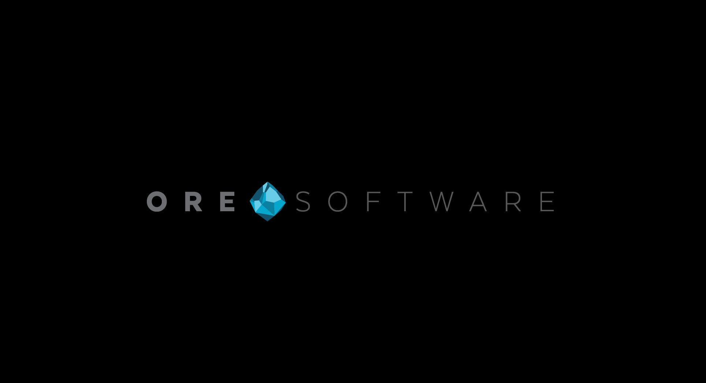

Open source, built in public
Open systems.
Reliable software.
ORESoftware is a growing family of developer tools, distributed systems, secure applications, and product platforms—designed to be useful, composable, and ambitious.

Developer toolsFast workflows and better ergonomics
Distributed systemsCoordination, sync, and resilient execution
Product platformsSecure, practical software across devices
Popular repositories
Tools developers keep reaching for.
A few enduring ORESoftware projects: coordination primitives, testing infrastructure, command-line configuration, and package-release verification.
Organization ecosystem
One workshop. Many ambitious systems.
Explore the expanding network of ORESoftware organizations. Search by project name, technology, or purpose.
21 organizations shown
No matching organizations. Try another project name or technology.
Behind ORESoftware
Meet the mastermind building the ecosystem.
The1Mills is the personal home of Alexander Mills—the engineer and open-source builder behind ORESoftware and its growing constellation of projects.